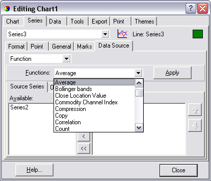
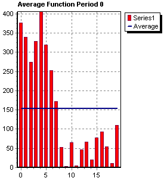
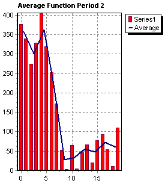
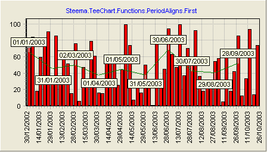
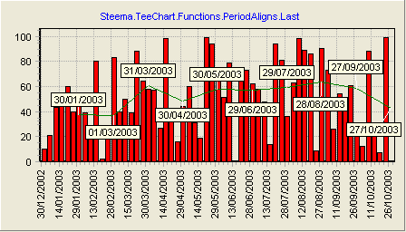

Previous | Next
|
|
Contents page Previous | Next |
| Contents |
Function Types
Function characteristics |
A TeeChart Pro Function is a Series, that can be of almost any Series Type, to which an algebraic function is applied and for which the datasource is another Chart Series.
All Functions derive from the TTeeFunction Component and inherit TeeFunction's Period method.
TeeChart Pro includes the following list of predefined functions. Please see the TeeChart Editor Gallery and Helpfile for a full list of all Function Types:
|
Function Type |
No. of inputs |
Description |
| Add | Unlimited | Plots sum of inputs |
| Average | Unlimited | The Average Function will calculate the average of every group of Period points |
| Copy | 1 | A direct copy of the input Series |
| Divide | Unlimited | The Divide Function plots inputs divided in descending order of inclusion |
| High | Unlimited | The High Function plots high point of inputs |
| Low | Unlimited | The Low Function plots low point of inputs |
| Multiply | Unlimited | The Multiply Function plots value of inputs multiplied |
| Subtract | Unlimited | Plots value of inputs subtracted in descending order of inclusion |
| Mode | 1 | The mode function returns the source series value that is repeated more times. |
| Median | 1 | Calculates the median value of the source series values. |
| Count | 1 | Draws horizontal line at Y position that is defined by the number of points in underlying Series. |
| Subset of Pro version only functions | ||
| Bollinger | 1 | The Bollinger Function uses simple or exponential moving average to constructs Bollinger Trading Bands |
| Curve Fitting | 1 | Draws fitted polynomial through data inputs using the TypeFitting formula |
| Exponential Average | 1 | Exponential average based on Weight |
| Exponential Moving Average | 1 | Exponential moving average based on Weight |
| Exponential Trend | 1 | Draws best exponential trend line through points in input series |
| MACD | 1 | Moving Average Convergence Divergence |
| Momentum | 1 | Each Y value is the current point's Y value less the last Period point's Y value |
| Momentum Division | 1 | Each Y values is the current point's Y value divided by the last Period point's YValue, expressed in percents |
| Moving Average | 1 | The Moving Average Function will calculate the simple or weighted average of every group of Period points |
| Root Mean Square | Unlimited | The Root Mean Square Function plots RMS value of inputs |
| Relative Strength Index | 1 | RSI Function calculates a percent value based on financial data. Depending on TRSISyle type different formula will be used to calculate RSI value |
| Standard Deviation | 1 | Maps the Standard Deviation (or Complete Standard Deviation) of every group of Period points |
| Stochastic | 1 | |
| Trend | 1 | Draws best trend line through points of input Series |
Several Function types support only one input Series. However it is possible to chain link Functions, thus, for example, taking the average of several Series in your Chart to create an Average Function Series, then identify the Trend of the average by using the Average Function as the input to the Trend Function.
With the Chart Editor, on the First Chart page, select the Add button as if to add a new Series to the Chart. In the TeeChart Gallery choose the Functions tab to select the Function you require. Each Function is presented as a Line Series, you may change the Series Type associated with the Function later by choosing the Change button on the first Chart Page. Function definitions are easily changed afterwards on the Datasource page of the Function Series. Here, just as easily, you may change the definition of a normal Series that you have added to the Chart to that of a Function (Function is really a definition of datasource, not a definition of Series Type).
The image below shows the Datasource page when editing a Function. The Line Series (Name "Series2", Title "Average") is defined. The left listbox at the bottom of the Datasource page shows other Series in the Chart available for input (here "Series1").

Assuming we start with a completely empty Chart here are the steps in code to build a simple Series-Function related Chart.
private void Load() {
//Add a data Series
Line line1 = new Line(tChart1.getChart());
//Populate it with data (here random)
line1.fillSampleValues(10);
//Add a series to be used for an Average Function
Line line2 = new Line(tChart1.getChart());
//Define the Function Type for the new Series
com.steema.teechart.functions.Average average1 = new com.steema.teechart.functions.Average();
line2.setFunction(average1);
//Define the Datasource for the new Function Series
line2.setDataSource(line1);
//*Note - When populating your input Series manually you will need to
//use the Checkdatasource method
//- See the section entitled 'Defining a Datasource'
//Change the Period of the Function so that it groups averages
//every 2 Points
line2.getFunction().setPeriod(2);
line2.checkDataSource();
}
We can add another Function to tell us something about the previous Function
public void button1_actionPerformed(ActionEvent e) {
//Let's change to 2D for visibility
tChart1.getAspect().setView3D(false);
//Add another Series to be used for a 2nd Function
Line line3 = new Line(tChart1.getChart());
//Define the Function Type for the new Series
com.steema.teechart.functions.High high1 = new com.steema.teechart.functions.High();
line3.setFunction(high1);
//Define the Datasource for the new Function Series
//Use the existing Function (Series2) as input
line3.setDataSource(tChart1.getSeries(1));
//Leave the Period at default 0 (No Period set) to draw
//A line at Highest of all points of the Average Function
The examples in the previous section highlight the use of Datasource for poulating a Function by code. Series use Datasource for defining the input for a Function or to define a Series TDataset datasource (see the Tutorial about accessing databases).
Using the Chart Editor, after adding a Function, the Function Series' Datasource page will show a list of available series for inclusion in the function definition. Here you may change the Function Type you wish to apply to the Series and select Series from the Left listBox "Available" and add them to the right Listbox,"Selected".
Datasource by code uses the Series.Datasource property.
Example
Suppose we have 2 data Series in a Chart added in at design-time via the TeeChart Editor. We add a Function composed of the average of the 2 Series:
private void Load() {
tChart1.getAspect().setView3D(false);
bar1.fillSampleValues(10);
bar2.fillSampleValues(10);
}
public void button1_actionPerformed(ActionEvent e) {
com.steema.teechart.styles.Line line1 = new
com.steema.teechart.styles.Line(tChart1.getChart());
com.steema.teechart.functions.Average average3 = new
com.steema.teechart.functions.Average();
Object[] tmpDataSource ={bar1,bar1};
line1.setFunction(tmpDataSource);
line1.setDataSource(bar1);
line1.getMarks().setVisible(true);
}
We add points to the 2 Series:
public void button1_actionPerformed(ActionEvent e) {
java.util.Random rnd = new java.util.Random();
for(int i = 0; i < 10; ++i)
bar1.add(rnd.nextInt(500));
bar2.add(rnd.nextInt(500));
}
}
Notice that the Function doesn't display. You need to use the checkDataSource method to read in values for the Function.
tChart1.getSeries(2).checkDataSource();
Function definitions may be changed at runtime to allocate a new Function to the Series simply by redefining the Series.DataSource method:
public void button3_actionPerformed(ActionEvent e) {
com.steema.teechart.functions.Cumulative cumulative1 = new com.steema.teechart.functions.Cumulative();
tChart1.getSeries(2).setFunction(cumulative1);
Period is an important method for working with Functions because the Period defines the range of points across which a Function is cyclically applied.
Example
We have 6 data points (eg. bars of a Bar Series) with values:
3, 8, 6, 2, 9 and 12
We define a Function Series with Period 0 (default) the average drawn is:
6.667
With Period set to 2 we get 3 values of average as output from the function:
5.5, 4 and 10.5
These values will plot centrally in their period range, ie. The 1st value between bars 1 and 2 of the input series, 2nd value between bars 3 and 4, etc..
You may define Period by selecting the function in the Chart Editor or you may modify Period at runtime using FunctionType.
Eg. Where Series 2 is the function series:
line1.getFunction().setPeriod(2);
Below are 2 Charts that highlight the effect of an applied Period
 |
 |
Period
can be defined to be a range. This is very useful when using DateTime series and
we want to express the "Period" of the function as a TimeStep. The property "PeriodStyle"
controls how is "Period" expressed.
For example you can now plot the "monthly average of sales" function just using
a normal "Average" function on a date-time source series and setting the
function period to "one month":
private void Load() {
//Add in a BarSeries and Average Function at design-time.
java.util.Random rnd = new java.util.Random();
tChart1.getAspect().setView3D(false);
DateTime today = DateTime.getToday();
bar1.getMarks().setVisible(false);
bar1.getXValues().setDateTime(true);
tChart1.getAxes().getBottom().getLabels().setAngle(90);
for(int i = 0; i < 60; ++i)
today = today.addDays(5);
bar1.add(today, rnd.nextInt(100),"",Color.red);
average1.setPeriodAlign(com.steema.teechart.functions.PeriodAligns.FIRST);
average1.setPeriodStyle(com.steema.teechart.functions.PeriodStyles.RANGE);
average1.setPeriod(30);
line1.setDataSource(bar1);
line1.checkDataSource();
}
This will result in several points, each one showing the "average" of each month of data in the BarSeries. It's mandatory that points in the source Series should be sorted by date when calculating functions on datetime periods. The range can also be used for non-datetime series:
for(int i = 0; i < 60; ++i)
bar1.add(new Double(i), rnd.nextInt(100),"",Color.red);
average1.setPeriodAlign(com.steema.teechart.functions.PeriodAligns.FIRST);
average1.setPeriodStyle(com.steema.teechart.functions.PeriodStyles.RANGE);
average1.setPeriod(6);
This will calculate an average for each group of points inside every "6"
interval.
(Points with X >=6, X<6 will be used to calculate the first average, points with
X >=6, X<12 will be used to calculate the second average and so on... ).
Notice this is different than calculating an average for every 6 points.
Use the Period Alignment property to align the function Points within the Series
range. The following will plot the Function point at the end of a monthly Period:
average1.setPeriodAlign(com.steema.teechart.functions.PeriodAligns.FIRST); average1.setPeriodStyle(com.steema.teechart.functions.PeriodStyles.RANGE); average1.setPeriod(com.steema.teechart.DateTime.getDaysInMonth(year,month));
Period = Month.TotalDays and PeriodAligns.First
As you can see from the
picture below, the "average" is plotted at the end of the month.

Period = Month.TotalDays and PeriodAligns.Last
In this case the "average" is plotted at the beginning of the month.

Creating a new Function component is simply creating a new component derived
from Function class (it also can be derived from an existing function ).
1) Function.Calculate: public virtual double Calculate(Series Source,int First,int Last)
2) Function.CalculateMany: public virtual double CalculateMany(ArrayList SourceSeries, int ValueIndex)
The Calculate method is used to calculate function result if only one series is datasource. CalculateMany is used to calculate function result if multiple series can be datasource.
Example : Creating new SquareSum Funtion.
Let’s decide we need a SquareSum Function to return the "sum of squares".
This function can have only one datasource or multiple datasources, so we'll override the Calculate and CalculateMany methods.
public class SquareSum extends Function {
public SquareSum() {
super();
}
public SquareSum(com.steema.teechart.Chart c) {
super(c);
}
public double calculate(Series sourceSeries,
int firstIndex,
int lastIndex) {
ValueList v = valueList(sourceSeries);
if (firstIndex == -1) {
return v.getTotal();
} else {
double result = 0;
for (int t = firstIndex; t <= lastIndex; t++) {
result+=Math.sqrt(v.getValue(t));
}
return result;
}
}
public double calculateMany(ArrayList sourceSeriesList,
int valueIndex) {
ValueList v;
double result = 0;
for (int t = 0; t < sourceSeriesList.size(); t++) {
v = valueList((Series) sourceSeriesList.get(t));
if (v.count > valueIndex) {
result+=Math.sqrt(v.getValue(valueIndex));
}
}
return result;
}
The FirstIndex and EndIndex variables are used to "loop" all SourceSeries points to calculate the sum of squares.
The "ValueList" method is used to extract the mandatory Steema.TeeChart.ValueList to make the class work with Series types like HorizBarSeries where "XValues" holds the point values and not "YValues".
The "Calculate" method is used when the Series has only one Series
as DataSource. When Series have more than one Series as datasources, the
"CalculateMany" method is called.
"CalculateMany" will get called once for each point in the source Series,
starting from zero and ending with the minimum point count of all datasources.
It is very important to understand the difference between Calculate and
CalculateMany. "Calculate" is called when there is only one datasource and it's
called only once. "CalculateMany" is called several times (one for each point)
when there are more than one Series as datasources.
 |
 |